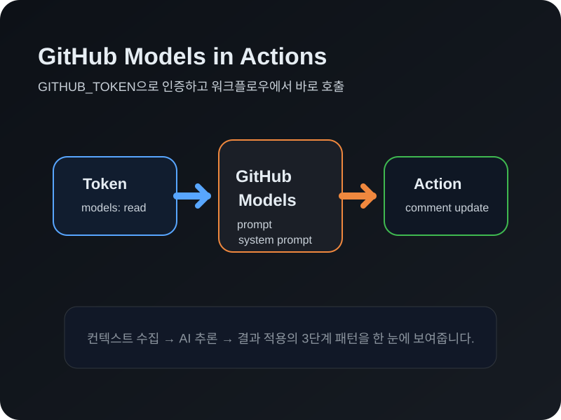

이 실습에서 배우는 것
AI 모델 카탈로그와 추론 API를 워크플로우에서 바로 사용하기
actions/ai-inference@v2로 AI 추론을 워크플로우에 통합하기
컨텍스트 수집 → AI 처리 → 결과 적용의 핵심 워크플로우 패턴
AI가 새 이슈를 분석하고 즉각적인 피드백을 제공하는 자동화
 GitHub Models
GitHub Models
AI 모델을 바로 사용할 수 있는 카탈로그
GitHub Models는 주요 제공업체의 AI 모델을 큐레이션한 카탈로그 서비스입니다. 추론 API를 통해 AI 기능을 워크플로우에 직접 통합할 수 있습니다.
핵심 특징
- 추론 API —
models.github.ai/inference에서 바로 호출 - 다양한 모델 — GPT, Claude 등 주요 AI 모델 사용 가능
- 내장 인증 —
GITHUB_TOKEN으로 별도 API 키 불필요 - 무료 사용 — 기본 사용량 제한 내에서 무료 이용
AI 모델에 접근할 수 있습니다!

 AI Inference 액션
AI Inference 액션
워크플로우에서 AI를 호출하는 공식 액션
actions/ai-inference@v2는 GitHub Actions에서 GitHub Models를 사용하는 가장 간단한 방법입니다.
기본 사용법
steps:
- name: AI Inference
id: ai-response
uses: actions/ai-inference@v2
with:
token: ${{ secrets.GITHUB_TOKEN }}
prompt: |
Give me a programming joke.주요 파라미터
token— GITHUB_TOKEN으로 인증prompt— AI에게 보낼 질문/요청system-prompt— AI의 역할 정의max-tokens— 응답 최대 길이
 인증과 권한
인증과 권한
안전하고 간편한 AI 모델 접근
GitHub Actions와 GitHub Models 간의 통합은 원활한 인증을 제공합니다. 별도의 API 키나 복잡한 설정이 필요 없습니다.
설정 방법
permissions:
models: read # AI 모델 접근
issues: write # 이슈 댓글 작성인증 흐름
- 🔑 내장 인증 —
GITHUB_TOKEN으로 자동 인증 - 🔐 models: read — 추론 API 접근 권한 부여
- 🎯 최소 권한 원칙 — 필요한 권한만 명시적으로 선언
보안과 편의성을 동시에 확보합니다.
 3단계 AI 워크플로우 패턴
3단계 AI 워크플로우 패턴
컨텍스트 수집 → AI 처리 → 결과 적용
AI는 세 가지 순차적 프로세스를 연결하여 지능적인 자동화를 만들 때 Actions에서 가장 큰 가치를 제공합니다.
이벤트 데이터, 파일, API 결과
시스템 프롬프트 + 데이터 분석
댓글 게시, 파일 업데이트
워크플로우를 유지보수하기 쉽게 유지합니다.
 프롬프트 설계
프롬프트 설계
AI의 역할과 출력 형식 정의하기
좋은 프롬프트가 AI 워크플로우의 품질을 결정합니다. system-prompt로 AI의 역할을, prompt로 실제 데이터를 전달합니다.
system-prompt 예시
system-prompt: |
You are a GitHub issue assistant.
Analyze newly opened issues
for completeness.
Always respond with ready-to-use
markdown content.효과적인 프롬프트 팁
- 역할 명시 — AI가 무엇인지 정의
- 출력 형식 지정 — 마크다운, JSON 등
- 동적 데이터 전달 —
${{ github.event }}활용 - 간결한 지시 — 핵심만 명확하게
 액션 결합하기
액션 결합하기
AI 추론 + 기존 Actions = 지능적 자동화
ai-inference의 출력(response)을 후속 Step의 입력으로 활용하여 의미 있는 액션을 수행합니다.
결합 패턴
steps:
- name: Analyze issue with AI
id: ai-response
uses: actions/ai-inference@v2
with:
token: ${{ secrets.GITHUB_TOKEN }}
prompt: "Analyze: ${{ github.event
.issue.body }}"
- name: Post comment
uses: peter-evans/create-or-update-comment@v4
with:
issue-number: ${{ github.event
.issue.number }}
body: ${{ steps.ai-response
.outputs.response }}댓글 게시, 라벨링, 릴리스 노트 등에 활용합니다.
실습의 비밀 — 자동 검증
뒤에서 자동으로 돌아가는 검증 시스템
이 실습은 GitHub Actions를 사용해 여러분의 진행을 자동으로 확인합니다.
자동 검증 흐름
- 1단계:
ask-ai.yml생성 → workflow_dispatch로 수동 실행 → AI 응답 확인 - 2단계:
issue-completeness.yml생성 → issues: opened → AI 이슈 분석 댓글 확인
 핵심 정리
핵심 정리
AI 모델 카탈로그 — GITHUB_TOKEN으로 인증
actions/ai-inference@v2 — prompt + system-prompt
models: read 권한 — 별도 API 키 불필요
컨텍스트 수집 → AI 처리 → 결과 적용
AI 응답을 다른 액션의 입력으로 연결